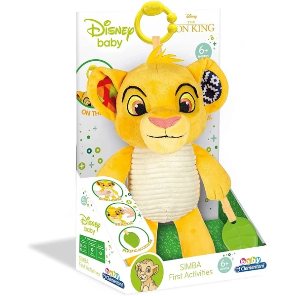
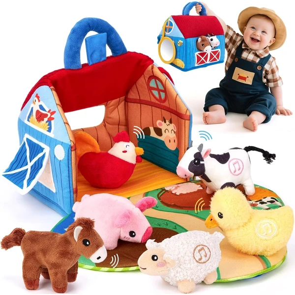
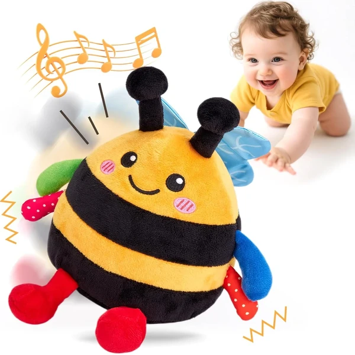
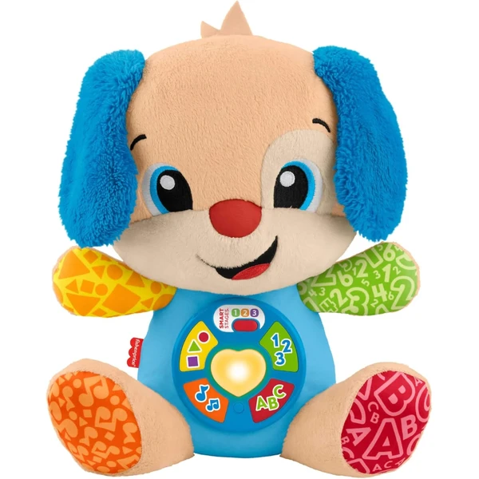
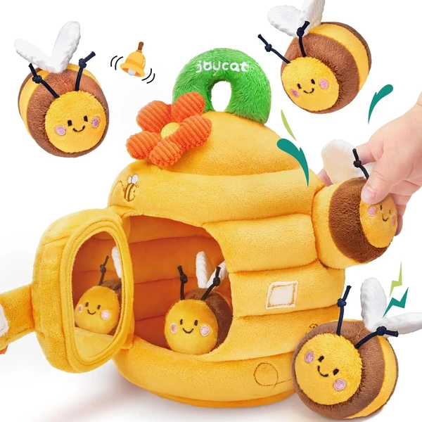

hahaland Cangrejo Bailarín
Un peluche interactivo con forma de cangrejo que baila y suena al tocarlo, con 48 canciones distintas y un modo de grabación que repite lo que el bebé dice. Recargable por USB, con hasta una hora de juego continuo.
⭐ ¿Por qué nos gusta?
- ✔ Baila y suena con 48 canciones distintas.
- ✔ Modo grabación: repite lo que dice el bebé.
- ✔ Recargable por USB, hasta 1 hora de juego.
💬 Lo que más destacan las familias
Muchos padres coinciden en que el modo de grabación es lo que más engancha, ya que el bebé se ríe mucho al escuchar su propia voz repetida. El movimiento de baile también anima bastante a moverse hacia el juguete.
Ver en Amazon

Clementoni Rey León Peluche Texturas
Un peluche de Simba con orejas que suenan, un sonajero interno y una barriguita que chirría, pensado para estimular las habilidades sensoriales del bebé. Incluye anilla para colgarlo del cochecito.
⭐ ¿Por qué nos gusta?
- ✔ Orejas sonoras y barriguita que chirría.
- ✔ Colores vivos para estimular la vista.
- ✔ Anilla para colgarlo del cochecito.
💬 Lo que más destacan las familias
Entre los comentarios más habituales aparece lo bien recibido que resulta gracias al diseño de Simba, muy reconocible para toda la familia. Los distintos sonidos también se valoran porque mantienen el interés del bebé.
Ver en Amazon

hahaland Granja de Peluche
Un set con 6 animales de peluche que hablan y dicen su nombre, guardados en un granero plegable que se convierte en una zona de juego más amplia. Incluye espejo y texturas variadas para estimular los sentidos.
⭐ ¿Por qué nos gusta?
- ✔ 6 animales parlantes con sonidos reales.
- ✔ Granero plegable en zona de juego más amplia.
- ✔ Incluye espejo y texturas variadas.
💬 Lo que más destacan las familias
Se repite bastante el comentario de que la variedad de animales con sonidos distintos mantiene el interés durante más tiempo. El diseño plegable del granero también se valora porque facilita guardarlo todo junto.
Ver en Amazon

hahaland Abeja Bailarina
Un peluche con forma de abeja que canta y salta al ritmo de 20 melodías, animando al bebé a moverse y perseguirlo mientras gatea. Incluye modo de grabación para repetir sonidos y palabras.
⭐ ¿Por qué nos gusta?
- ✔ Canta y salta con 20 melodías distintas.
- ✔ Fomenta el gateo al perseguir el movimiento.
- ✔ Modo grabación para repetir sonidos.
💬 Lo que más destacan las familias
Lo que más suele gustar es cómo anima al bebé a gatear detrás del juguete mientras se mueve y suena. El modo de grabación también se valora porque añade un punto de diversión extra a los sonidos.
Ver en Amazon

Fisher-Price Perrito Laugh & Learn
Un peluche musical con más de 80 canciones, sonidos y frases en varios idiomas, con tres niveles Smart Stages que se adaptan al desarrollo del bebé. El corazón se ilumina mientras enseña colores y primeras palabras.
⭐ ¿Por qué nos gusta?
- ✔ Más de 80 canciones, sonidos y frases.
- ✔ Tres niveles que se adaptan al desarrollo del bebé.
- ✔ Disponible en varios idiomas, incluido español.
💬 Lo que más destacan las familias
Una característica muy mencionada es que los niveles Smart Stages acompañan al bebé durante mucho tiempo, sin quedarse corto enseguida. El corazón iluminado también resulta muy llamativo durante las canciones.
Ver en Amazon

JoyCat Colmena Montessori
Un juguete Montessori con 5 abejas de peluche que se meten y sacan de una colmena, cada una con texturas, sonajeros o silbatos distintos. Incluye una puertecita con espejo que añade una sorpresa extra.
⭐ ¿Por qué nos gusta?
- ✔ 5 abejas con texturas y sonidos distintos.
- ✔ Enseña a meter, sacar y clasificar piezas.
- ✔ Incluye espejo sorpresa en la puertecita.
💬 Lo que más destacan las familias
Muchos padres destacan que el juego de meter y sacar las abejas mantiene entretenido al bebé durante bastante rato. El diseño compacto también se valora para llevarlo de viaje o al parque.
Ver en Amazon